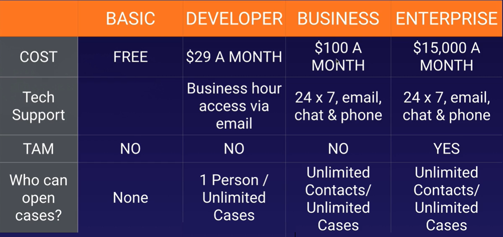

6. Management and Governance¶
CloudFormation¶
AWS CloudFormation is IaaS tool to create, update and delete resources with templates (json or yaml). While Elastic Beanstalk we can create and manage resources based on code...
- Create stack using the sample template Wordpress blog, where stack is a set of related resources.
- enter rnietoe for every name and Abodroc83 for every password.
- Select instance type t2.micro and our key value pair rnietoe
Create stack. This will create and configure an EC2 instance based on the wordpress template- from
Outputtab, click on the value link. - from
Templatetab, clik onView in Designer
CloudFormation service is free, but the resources that it provisions have a cost
CloudFormation has a wide set of supported resources, but does not support the creation of all AWS resources.
AWS Quick Start is a way of deploying environments quickly using CloudFormation templates built by experts AWS Solucions Architects.
AWSTemplateFormatVersion: "optional version date. sample: 2010-09-09"
Description: optional string
Metadata:
# optional template metadata
Parameters:
# optional set of parameters
Mappings:
# optional set of mappings
Conditions:
# set of conditions
Transform:
# set of transforms
Resources:
# required set of resources
Outputs:
# optional set of outputs
When updating a stack, a change set (such as tags) is created with the summary of proposed changes. This change set is executed to update the stack. Only the change set is executed instead of all resources defined in the template.
At the other hand, when adding a new resource (such as SecurityGroup) for our previous deployed resource (EC2), a new EC2 instance in created with the SecurityGroup, and the old EC2 instance is deleted automatically
Resources¶
UserData property:
- perform actions on system startup
- only runs on the first boot cycle
- execution time impact on the startup time
- Base64 encoded
on Windows:
- Run as local admin
- Batch commands and/or powersheel support
- Executed by EC2Config or EC2Launch
#script
echo Current date and time >> %SystemRoot%\Tem\test.log
echo %DATE% %TIME% >> %SystemRoot%\Tem\test.log
#powershell
$file = $env:SystemRoot + "\Temp\" + (Get=Date).ToString("MM-dd-yy-hh-mm")
New-Item $file -ItemType file
on Linux:
- Run as root (no need for sudo)
- Not run interactively (no user feedback)
- Logs output to /var/log/cloud-init-output.log
#!/bin/bash # interpreter
yum update -y
yum install -y httpd
service httpd start
Sample template:
Resources:
EC2Instance:
Type: AWS::EC2::Instance
Properties:
UserData:
!Base64: |
#!/bin/bash -xe
yum update -y
yum install httpd -y
service httpd start
Mappings¶
Mappings:
RegionMap: # MapName
us-east-1: # TopLevelKey 1
AMI: ami-1853ac65 # SecondLevelKey 1
us-west-1: # TopLevelKey 2
AMI: ami-bf5540df # SecondLevelKey 2
Resources:
MyEc2Instance:
Type: AWS::EC2::Instance
Properties:
InstanceType: t2.micro
ImageId:
!FindInMap:
- RegionMap # MapName
- !Ref AWS::Region # TopLevelKey
- AMI # SecondLevelKey
Input Parameters¶
Parameters enable you to input custom values to your template each time you create or update a stack.

Supported parameter types:
- String
- Number
- List
- CommaDelimitedList
- AWS-specific types(AWS::ec2::Image::Id)
Parameters:
InstanceTypeParameter: # Parameter ID
Type: String # Parameter Type
Default: t2.micro # Parameter Property 1
AllowedValues: # Parameter Property 2
- t2.micro
- m1.small
- m1.large
Description: # ParameterProperty 3
EC2 Instance Type
Resources:
Ec2Instance:
Type: AWS::EC2::Instance
Properties:
InstanceType: !Ref: InstanceTypeParameter # Parameter
Metadata¶
Conditions¶
Transform¶
Outputs¶
Outputs information about resources, within a cloudformation stack. For example:
- the public IP or DNS of a EC2 instance
- the S3 bucket name for a stack
Outputs:
ServerDns: # OutputID
Value: !GetAtt # Value to return
- Ec2Instance
- PublicDnsName
Export:
Name: # Value to export
Intrinsic functions¶
-
Join: appends a set of values into a single value
{ "Fn::Join" : [ ":", [ "a", "b", "c" ] ] }!Join [ ":", [ a, b, c ] ] -
Ref: : returns the value of the specified resource.
{ "Ref" : "resourceId" }!Ref resourceId -
FindInMap: returns the value corresponding to keys in a two-level map that is declared in the Mappings section.
{ "Fn::FindInMap" : [ "MapName", "TopLevelKey", "SecondLevelKey"] }!FindInMap [ MapName, TopLevelKey, SecondLevelKey ] -
GetAtt: returns the value of an attribute from a resource in the template
{ "Fn::GetAtt" : [ "logicalNameOfResource", "attributeName" ] }!GetAtt logicalNameOfResource.attributeName -
Sub: substitutes variables in an input string with values that you specify when you create or update a stack, such as ${AWS::StackName} or ${AWS::Region}
{ "Fn::Sub" : String }!Sub String -
GetAZs: returns an array that lists AZs for a specified region in alaphabetical order. Specifying an empty string is equivalent to specifying AWS::Region.
{ "Fn::GetAZs" : "region" }``` ```yml !GetAZs region
Pseudo parameters¶
- AWS::AccountId: Returns the AWS account ID of the account in which the stack is being created
- AWS::NotificationARNs: Returns the list of notification ARNs (Amazon Resource Names) for the current stack.
- AWS::StackId: Returns the ID of the stack
- AWS::StackName: Returns the Name of the stack
- AWS::Region: Returns the AWS Region in which the resource is being created
CloudFormation helper scripts¶
Pyhon based helper scripts preinstalled on Amazon Linux (to avoid scripting):
- cfn-init:: read Metadata to execute AWS::CloudFormation::Init
- cfn-signal: signal with a CreationPolicy or WaitCondition when the resource or application is ready.
- cfn-get-metadata: retrieve metadata based on a specific key.
- cfn-hup: check for updates to metadata and execute custom hooks when changes are detected.
single config key sample:
AWS::CloudFormation::Init:
config:
packages: download and install pre-packaged applications and components
groups: create Linux/Unix groups and assign group IDs
users: create Linux/UNIX users on the EC2 instance
sources: download an archive file and unpack it in the target directory on EC2
files: create files on the EC2 instance
services: define enabled and siabled services when the instance is launch
commands: execute commands on the EC2 instance
configSets sample to install a web server:
installweb:
packages:
yum:
httpd: []
services:
sysvinit:
httpd:
enabled: true
ensureRunning: true
installphp:
packages:
yum:
php: []
Resources:
EC2Instance:
Metadata:
AWS::CloudFormation::Init:
configSets:
webphp:
- "installphp"
- "installweb"
How to setting up a full stack:
- From
CloudFormation, create stack uploading the following template file:
Parameters:
myKeyPair:
Description: Amazon EC2 Key Pair
Type: AWS::EC2::KeyPair::KeyName
VpcId:
Description: Enter the VpcId
Type: AWS::EC2::VPC::Id
SubnetIds:
Description: Enter the Subnets
Type: List<AWS::EC2::Subnet::Id>
Mappings:
RegionMap:
us-east-1:
AMI: ami-1853ac65
us-west-1:
AMI: ami-bf5540df
eu-west-1:
AMI: ami-3bfab942
ap-southeast-1:
AMI: ami-e2adf99e
ap-southeast-2:
AMI: ami-43874721
Resources:
LoadBalancer: # Application Load Balancer
Type: AWS::ElasticLoadBalancingV2::LoadBalancer
Properties:
SecurityGroups:
- !Ref ALBSecurityGroup
Subnets: !Ref SubnetIds
LoadBalancerListener: # Port 80 Listener for ALB
Type: AWS::ElasticLoadBalancingV2::Listener
Properties:
LoadBalancerArn: !Ref LoadBalancer
Port: 80
Protocol: HTTP
DefaultActions:
- Type: forward
TargetGroupArn:
Ref: TargetGroup
TargetGroup:
Type: AWS::ElasticLoadBalancingV2::TargetGroup
Properties:
Port: 80
Protocol: HTTP
VpcId: !Ref VpcId
AutoScalingGroup:
Type: AWS::AutoScaling::AutoScalingGroup
Properties:
AvailabilityZones: !GetAZs
LaunchConfigurationName: !Ref LaunchConfiguration
MinSize: 1
MaxSize: 3
TargetGroupARNs:
- !Ref TargetGroup
LaunchConfiguration:
Type: AWS::AutoScaling::LaunchConfiguration
Metadata:
Comment: Install php and httpd
AWS::CloudFormation::Init:
config:
packages:
yum:
httpd: []
php: []
files:
/var/www/html/index.php:
content: !Sub |
<?php print "Hello world Abs was here!"; ?>
services:
sysvinit:
httpd:
enabled: true
ensureRunning: true
Properties:
KeyName: !Ref myKeyPair
InstanceType: t2.micro
SecurityGroups:
- !Ref EC2SecurityGroup
ImageId:
Fn::FindInMap:
- RegionMap
- !Ref AWS::Region
- AMI
UserData:
'Fn::Base64':
!Sub |
#!/bin/bash -xe
# Ensure AWS CFN Bootstrap is the latest
yum install -y aws-cfn-bootstrap
# Install the files and packages from the metadata
/opt/aws/bin/cfn-init -v --stack ${AWS::StackName} --resource LaunchConfiguration --region ${AWS::Region}
ALBSecurityGroup:
Type: AWS::EC2::SecurityGroup
Properties:
GroupDescription: ALB Security Group
VpcId: !Ref VpcId
SecurityGroupIngress:
- IpProtocol: tcp
FromPort: 80
ToPort: 80
CidrIp: 0.0.0.0/0
EC2SecurityGroup:
Type: AWS::EC2::SecurityGroup
Properties:
GroupDescription: EC2 Instance
EC2InboundRule: # EC2 can only accept traffic from ALB
Type: AWS::EC2::SecurityGroupIngress
Properties:
IpProtocol: tcp
FromPort: 80
ToPort: 80
SourceSecurityGroupId:
!GetAtt
- ALBSecurityGroup
- GroupId
GroupId:
!GetAtt
- EC2SecurityGroup
- GroupId
Outputs:
PublicDns:
Description: The Public DNS
Value: !Sub 'http://${LoadBalancer.DNSName}'
- Set stack name and parameters and finally create the stack
- Stak is created with defined resources

- Check the stack outputs and browse to the EC2 instance uri:

ChangeSets¶
Allow to preview how changes will impact to the resources. There are 4 changeSets operations:
- Create: create a change set. This operation does not modify the stack
- View: view proposed changes after creating
- Execute: execute the change set to update the stack
- Delete: delete change set. This operation does not modify the stack
how to create a change set for current stack to update security groups:
- We are going to remove port 22 from security group in this sample
- From CloudFormation, select the stack and from stack actions, Create change sets for current stack
- Upload the template with changes and create
- See the JSON Changes result:
[
{
"resourceChange": {
"logicalResourceId": "MySecurityGroup",
"action": "Modify", // Add | Modify | Remove
"physicalResourceId": "MyFirstStack-MySecurityGroup-1AT0XTT24PZNP",
"resourceType": "AWS::EC2::SecurityGroup",
"replacement": "False",
"moduleInfo": null,
"details": [
{
"target": {
"name": "SecurityGroupIngress",
"requiresRecreation": "Never",
"attribute": "Properties"
},
"causingEntity": null,
"evaluation": "Static",
"changeSource": "DirectModification"
}
],
"changeSetId": null,
"scope": [
"Properties"
]
},
"type": "Resource"
}
]
- Finally we can
deleteorexecutethe change set
The actions depends on the resource. we should predict if replacement will be necesary based on these documents:
CloudWatch¶
Monitor resources and applications performances:
- compute
- ec2 instances - every 5 minutes by default
- autoscaling groups
- ELB
- Route53 health checks
- storage and content delivery
- EBS - virtual hard disk
- Storage gateways
- CloudFront
- network
CloudTrail¶
Continuously log your AWS account activity monitoring API calls per account and region
logs can be stored in a single S3 bucket (belonging to the paying account):
- turn on CloudTrail in paying account
- create a bucket policy that allows cross-account access
- turn on cloud trail in other accounts and use the bucket in the paying account
Systems Manager¶
View and manage AWS resources in the cloud (EC2 fleets) or on premise (virtual machines)
AWS Organisations¶
AWS Organizations enables you to centrally manage billing, control access, compliance, and security, and share resources across multiple accounts in the AWS Cloud.
You can consolidate all your AWS accounts into an organization, and arrange all AWS accounts into distinct organizational units.
- Provides single payer and centralized cost tracking
- Lets you create and invite accounts
- Allows you to apply policy-based controls
- Helps you simplify organization-wide management of AWS services
- Or you can create an organization with only consolidated billing features.
After you create an organization, you cannot join this account to another organization until you delete its current organization.
- From AWS Organisations,
create organisation
Enable AWS Single Sign On to centrally manage access to multiple AWS accounts and business applications. Create an organization trail in AWS CloudTrail to log all events for all AWS accounts in your organization.
- From
Organize AccountsTab, we create a new organisational units - From
Policiestab, enable service control policies and create a sample policy to block EC2 usage.- Select Amazon EC2 statement and deny effect
- Apply the new policy to organisational units or to AWS Accounts
Maximum of 20 Link accounts. Contact AWS for more
Assuming all instances are in the same AWS Organization, the reserved instance pricing for the unused on demand instances will be applied.
Landing Zone helps to quickly setup a secure, multi-account AWS environment based on AWS best practices.
AWS Config¶
AWS Config provides an inventory of your AWS resources and a history of configuration changes to these resources.
You can use AWS Config to define rules that evaluate these configurations for compliance.
How to get started:
- Specify the types of AWS resources you want AWS Config to record
- Define the Amazon S3 bucket to which it sends files
- Set the Amazon SNS topic to which it sends notifications
- Define config rules
- Restart EC2 instances and check AWS Config results
You are charged based on the number of configuration items recorded, the number of active AWS Config rule evaluations and the number of conformance pack evaluations in your account
Pricing¶
- Capex: Capital Expenditure: you pay up front. It's a fixed cost
-
Opex: Operational Expenditure: you pay for what you use, like electricity, gas or water
-
Budgets predict costs before they are incurred. Alarms can be set to monitor spending on your AWS account from
AWS Billingservice - BudgetsReceive Billing Alertsmust be enabled at Billing Preferences. -
Cost explorer is use to explore costs after they have been incurred. See Billing & Cost Management Dashboard.
-
Creating a billing alarm at
ClouldWatch/Alarms/Billingusing SNS (Simple Notification Service) topic to monitor estimated AWS charges.
Application Integration/SNS is a messaging service that enables you to decouple microservices, distributed systems, and serverless applications. Using AWS SNS topics, your publisher systems can fan-out messages to a large number of subscriber endpoints for parallel processing, including Amazon SQS queues, AWS Lambda functions, and HTTP/S webhooks. Additionally, SNS can be used to fan out notifications to end users using mobile push, SMS, and email.
Application Integration/SQS (Simple Queue Service) offers a queue that lets you integrate and decouple distributed software systems and components.
Support Plans:
All accounts receive billing support


Pricing policies
- pay as you go
- pay less when you reserve
- pay even less per unit by using more
- pay even less as AWS grows
- custom pricing
cost drivers:
- compute
- storage
- data outbound (data leavingn, not data entering)
free services
- VPC
- Elastic Beanstalk
- Cloud Formation
- IAM
- Autoscaling
- Opsworks
- Consolidated billing
Create a paying account for billing purposes only. Do not deploy resources into the paying account.
Consolidated billing allows you to get volume discounts on all your accounts
AWS Cost Calculators¶
- AWS Simple Monthly Calculator (DEPRECATED)
- AWS Total Cost of Ownership Calculator (DEPRECATED): comparing AWS VS on premise
- AWS Pricing Calculator
¶
Developer Tools - X-Ray
AWS X-Ray helps developers analyze and debug production, distributed applications, such as those built using a microservices architecture. With X-Ray, you can understand how your application and its underlying services are performing to identify and troubleshoot the root cause of performance issues and errors. X-Ray provides an end-to-end view of requests as they travel through your application, and shows a map of your application’s underlying components.